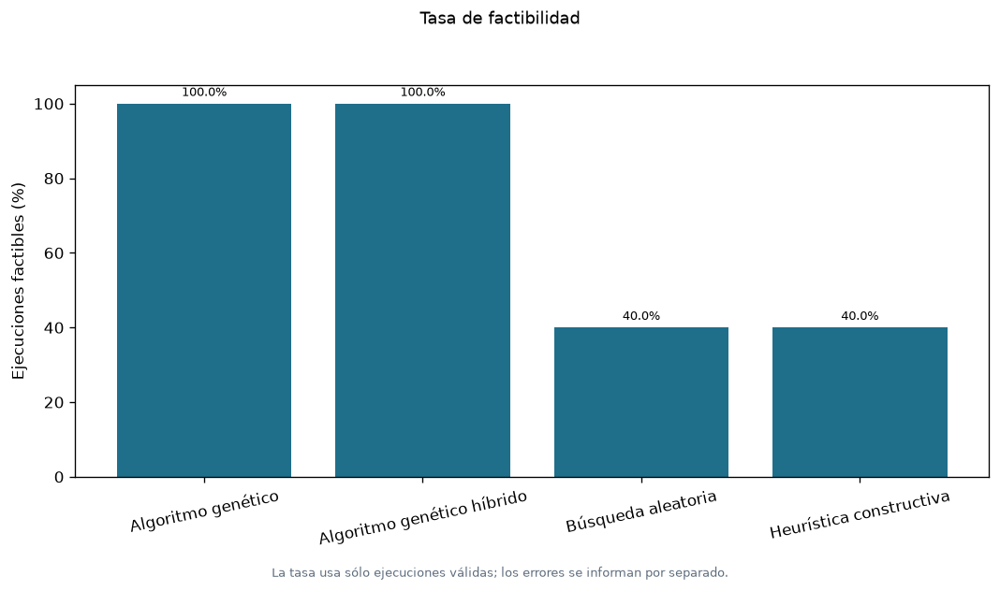
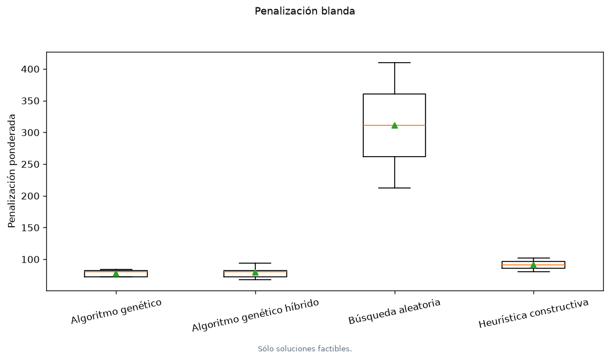
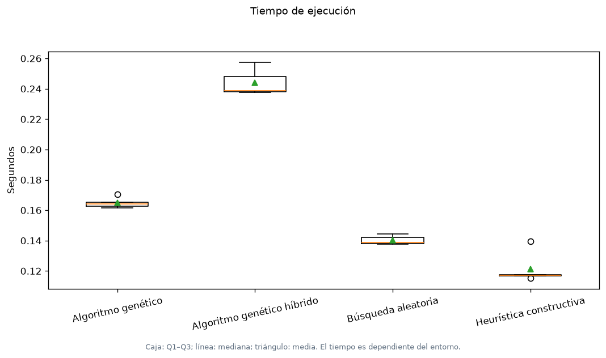
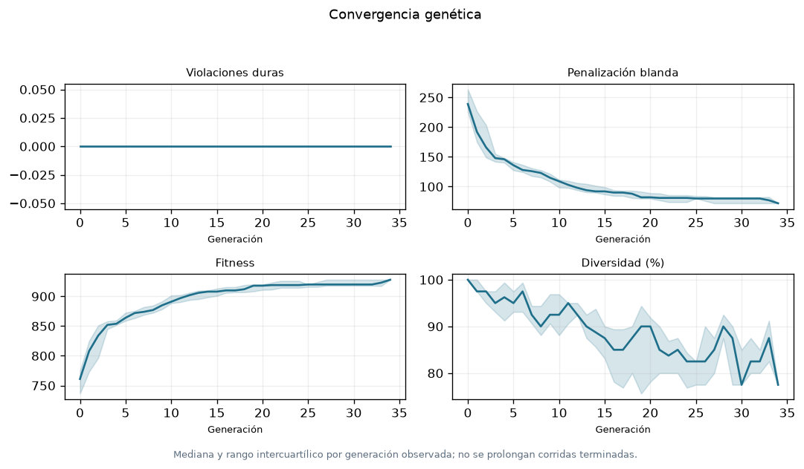
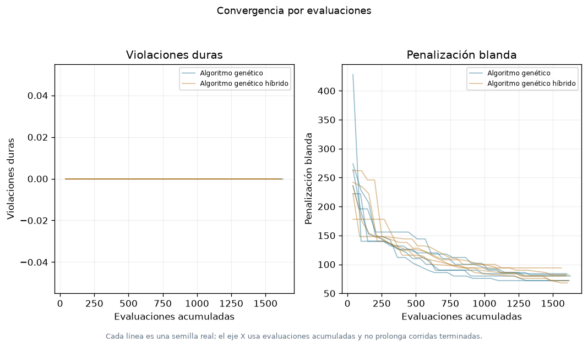
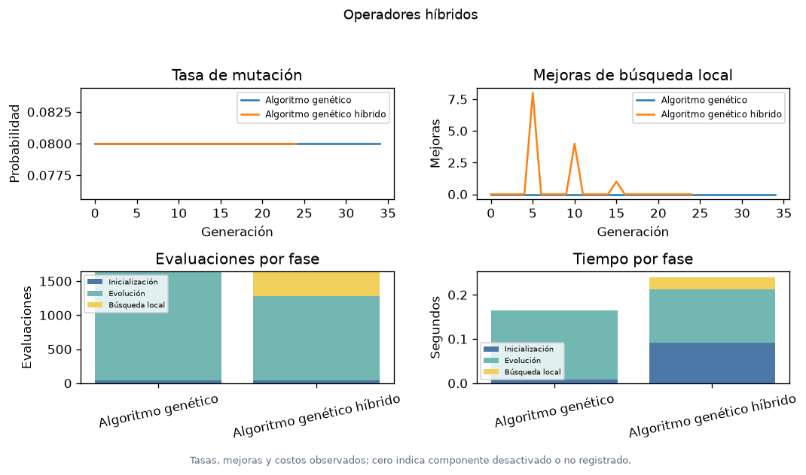

Estado: completado · Escenario: activo ·
Huella SHA-256: efd453512c1b1d1d50c4118dfbe88dea52b5626a523ed771a38252db092101e2
Todos los métodos usan la misma evaluación lexicográfica: primero minimizan violaciones duras y, entre empates, penalización blanda. El AG clásico permanece independiente. El híbrido puede combinar población inicial constructiva, búsqueda local sin retrocesos y mutación adaptativa acotada.
Configuración híbrida: inicialización=True, búsqueda local=True, mutación adaptativa=True, presupuesto máximo=sin límite explícito.
Muestras válidas: 5 · Factibles: 5 · Tasa: 100.0%
Muestras válidas: 5 · Factibles: 5 · Tasa: 100.0%
Muestras válidas: 5 · Factibles: 2 · Tasa: 40.0%
Muestras válidas: 5 · Factibles: 2 · Tasa: 40.0%
| Método | Rep. | Semilla | Factible | Duras | Blanda | Fitness | Evaluaciones | Eval. local | Tiempo (s) | Tiempo local | Parada |
|---|---|---|---|---|---|---|---|---|---|---|---|
| Algoritmo genético | 1 | 42 | Sí | 0 | 80 | 920 | 1640 | 0 | 0.1628 | 0.0000 | presupuesto_evaluaciones |
| Algoritmo genético híbrido | 1 | 42 | Sí | 0 | 94 | 906 | 1640 | 404 | 0.2375 | 0.0287 | presupuesto_evaluaciones |
| Búsqueda aleatoria | 1 | 42 | No | 1 | 348 | 552 | 1640 | 0 | 0.1422 | 0.0000 | presupuesto_agotado |
| Heurística constructiva | 1 | 42 | No | 2 | 74 | 726 | 1640 | 0 | 0.1174 | 0.0000 | presupuesto_agotado |
| Algoritmo genético | 2 | 43 | Sí | 0 | 84 | 916 | 1640 | 0 | 0.1617 | 0.0000 | presupuesto_evaluaciones |
| Algoritmo genético híbrido | 2 | 43 | Sí | 0 | 72 | 928 | 1640 | 352 | 0.2379 | 0.0276 | presupuesto_evaluaciones |
| Búsqueda aleatoria | 2 | 43 | No | 1 | 312 | 588 | 1640 | 0 | 0.1377 | 0.0000 | presupuesto_agotado |
| Heurística constructiva | 2 | 43 | Sí | 0 | 102 | 898 | 1640 | 0 | 0.1167 | 0.0000 | presupuesto_agotado |
| Algoritmo genético | 3 | 44 | Sí | 0 | 72 | 928 | 1640 | 0 | 0.1705 | 0.0000 | presupuesto_evaluaciones |
| Algoritmo genético híbrido | 3 | 44 | Sí | 0 | 82 | 918 | 1640 | 363 | 0.2575 | 0.0315 | presupuesto_evaluaciones |
| Búsqueda aleatoria | 3 | 44 | Sí | 0 | 212 | 788 | 1640 | 0 | 0.1380 | 0.0000 | presupuesto_agotado |
| Heurística constructiva | 3 | 44 | Sí | 0 | 80 | 920 | 1640 | 0 | 0.1154 | 0.0000 | presupuesto_agotado |
| Algoritmo genético | 4 | 45 | Sí | 0 | 82 | 918 | 1640 | 0 | 0.1651 | 0.0000 | presupuesto_evaluaciones |
| Algoritmo genético híbrido | 4 | 45 | Sí | 0 | 68 | 932 | 1640 | 366 | 0.2386 | 0.0285 | presupuesto_evaluaciones |
| Búsqueda aleatoria | 4 | 45 | Sí | 0 | 410 | 590 | 1640 | 0 | 0.1388 | 0.0000 | presupuesto_agotado |
| Heurística constructiva | 4 | 45 | No | 4 | 78 | 522 | 1640 | 0 | 0.1172 | 0.0000 | presupuesto_agotado |
| Algoritmo genético | 5 | 46 | Sí | 0 | 72 | 928 | 1640 | 0 | 0.1641 | 0.0000 | presupuesto_evaluaciones |
| Algoritmo genético híbrido | 5 | 46 | Sí | 0 | 80 | 920 | 1640 | 362 | 0.2482 | 0.0312 | presupuesto_evaluaciones |
| Búsqueda aleatoria | 5 | 46 | No | 1 | 384 | 516 | 1640 | 0 | 0.1444 | 0.0000 | presupuesto_agotado |
| Heurística constructiva | 5 | 46 | No | 3 | 60 | 640 | 1640 | 0 | 0.1395 | 0.0000 | presupuesto_agotado |






Interpretación descriptiva; no constituye una prueba de superioridad estadística. Mayor tasa de factibilidad observada: 100.0% (Algoritmo genético, Algoritmo genético híbrido). Menor mediana de penalización entre soluciones factibles: 80.00 (Algoritmo genético, Algoritmo genético híbrido). El tiempo es secundario y puede variar según el equipo y la carga del sistema.
Resultados condicionados al escenario, semillas, presupuesto y pesos del modelo. Las puntuaciones parciales usadas al construir individuos heurísticos no son evaluaciones completas; cada individuo terminado sí se evalúa y contabiliza. El tiempo depende del equipo. La ausencia de una solución factible no demuestra imposibilidad matemática. No se afirma optimalidad global ni superioridad general.